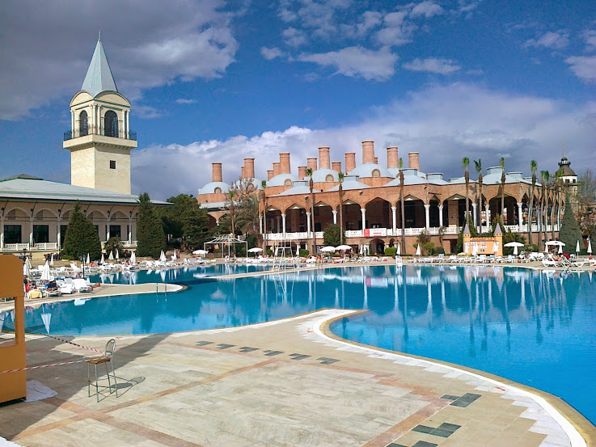

Turkey
|  |
Antalya:Antalya is the eighth most populous city in Turkey and the capital of its eponymous province. Located on Anatolia's flourishing southwest coast bordered by the Taurus Mountains, Antalya is the largest Turkish city on the Mediterranean coast with over one million people in its metropolitan area. Antalya Province, which includes the city, is home to almost two million people and is the fastest-growing province in the country. |
Spices:Visit Istanbul's spice bazaar and you'll see why Turkey is famous for it's spices. Sacks and stacks of freshly ground spices line the aisles of this historic bazaar and wow visitors with their aromas and colors. But you don't have to be in Istanbul to enjoy the best spices. Fresh spices are found everywhere from the local bazaars and markets to the largest supermarkets. In fact, most spices used in Turkish cuisine are easy to find wherever you are. Just look in the spice section of your favorite market. |